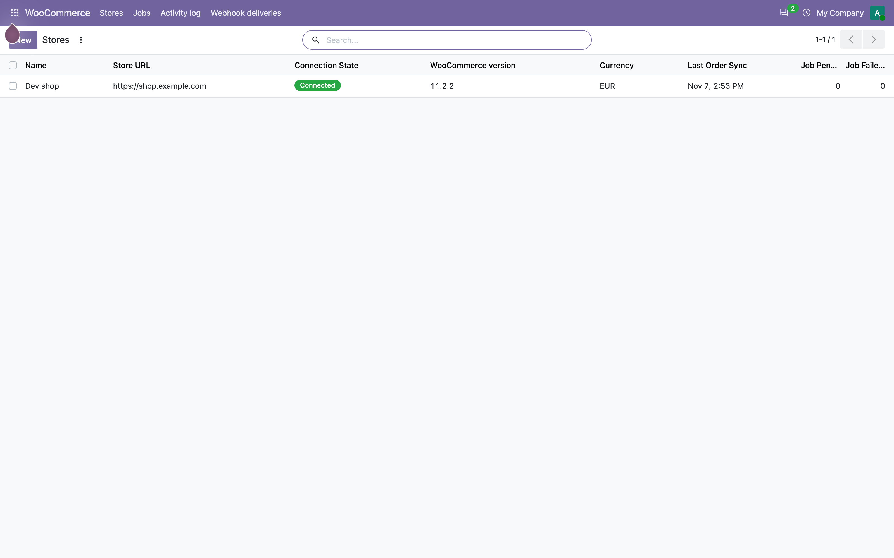
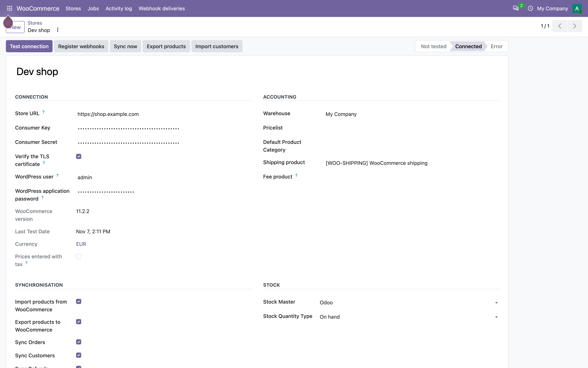
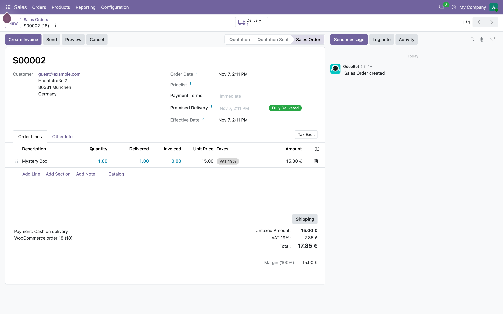
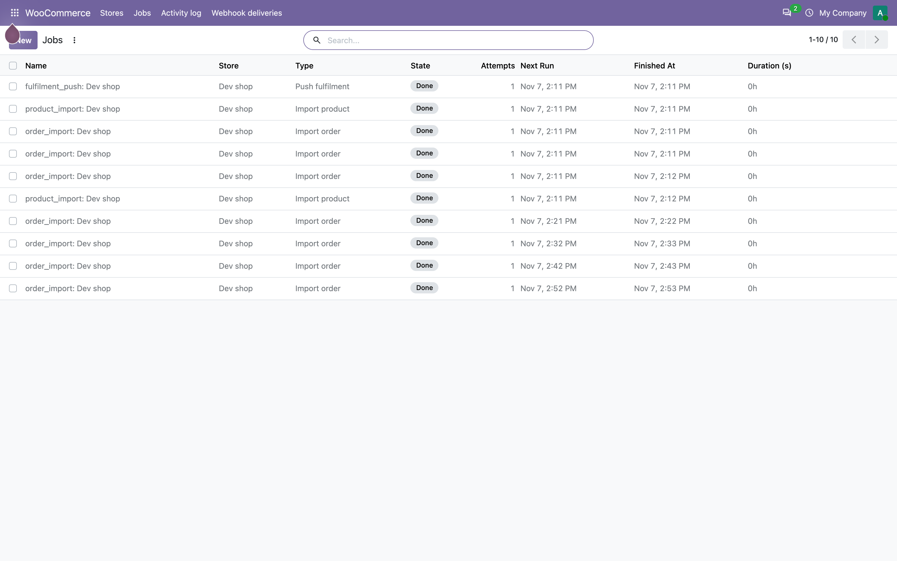
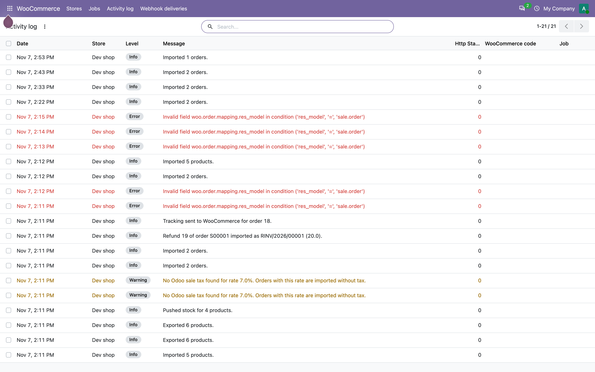

Two-way Sync for WooCommerce
Free, open source two-way sync between a WooCommerce store and Odoo:
catalog, stock, orders, refunds and tracking numbers. No paid licence,
no external Python packages, no mandatory OCA modules.
Works with Odoo 19.0 and 20.0 (Community and Enterprise)
and with WooCommerce 3.5 and newer — tested against WooCommerce 11.2.2.
Licence: AGPL-3.0 or later · Author: POLISHCHUK & SONS LTD ·
Support: best effort, no paid support.


Why another connector
Both systems are open source, and the bridge between them should be too.
This module was written with the failures of commercial connectors in
mind: duplicated products after a SKU change, orders imported twice by a
webhook and a cron, prices with tax imported as net, jobs stuck in
pending after a worker crash, silent failures with no trace.
- Identity by WooCommerce ID, SKU only to adopt an existing Odoo product on the first match.
- Idempotent import: a webhook and the poll can race without creating a duplicate.
- Queue with retries and a lease instead of silent failures, with an activity log for every error.
- Taxes matched by rate, never by a hard-coded name, plus a total comparison that warns instead of absorbing a difference.
Catalog: products, variations, attributes, images
- Import of products, variations, attributes, prices, weight, descriptions and the main image.
- Export of Odoo products into WooCommerce, with the image uploaded through the WordPress media library.
- Matching by WooCommerce ID first; the SKU is used once, to adopt an existing product, and an export adopts a WooCommerce product with the same SKU instead of duplicating it.
- Archiving, never deletion: a product removed in WooCommerce is archived in Odoo and keeps its sales history.
- One broken product or image never stops the synchronisation: it is logged and the run continues.
Stock in both directions
- Three modes per store: Odoo is the master, WooCommerce is the master, or the stock sync is off.
- Push writes the on-hand or the available quantity, through the product and variation endpoints, under a PostgreSQL advisory lock.
- Pull creates traceable inventory adjustments in Odoo instead of writing quants directly.
- The stock actions are installed disabled, so nothing is written to a live shop before you decide.
Orders, customers and money
- Orders imported by webhook and by a scheduled poll, with line items, line discounts, shipping lines, fee lines and taxes.
- Taxes matched to Odoo sale taxes by rate, with a preference for a tax that has an account and then the company default.
- Tax-inclusive stores supported: gross amounts are converted to net before the line is written, Odoo adds the tax back.
- After the import the Odoo total is compared with the WooCommerce total; a difference above the tolerance is logged, never absorbed.
- Customers matched by e-mail or created, guest checkout supported, addresses filled only when empty.
Refunds and fulfilment
- Partial refunds imported as partial credit notes, not as a reversal of the whole invoice.
- Amount-only refunds credit exactly what the customer received back: the tax part of such a refund is not reversed, and the credit note is logged for the accountant.
- A refund is idempotent: the same WooCommerce refund can never produce two credit notes.
- Validating an outgoing delivery sends the tracking number to WooCommerce as an order note, visible to the customer.
- Cancelling a sale order in Odoo cancels the matching order in WooCommerce.

Operations: queue, log, webhooks
- Jobs: state, attempts, next run, duration, payload, last error; Retry, Cancel and Run now.
- Lease and reclaim: a crashed worker cannot leave a job running forever; a failed job retries with exponential backoff and is dead-lettered after the configured attempts.
- Activity log: one line per batch, per warning and per failure, with the HTTP status and the WooCommerce error code.
- Webhook deliveries: every delivery, its topic, its deduplication key and its processing state.
- HMAC-SHA256 signature check on the raw body, deduplication by delivery id, 200 answered immediately and the work done in the queue.
- A health page at /woocommerce/status for a quick support check.


Installation
- Copy the
rex_woocommerce_connector directory into an Odoo addons path.
- Restart Odoo, then Apps > Update Apps List > Install Two-way Sync for WooCommerce.
- In WooCommerce: Settings > Advanced > REST API > Add key, permissions Read/Write.
- In Odoo: WooCommerce > Stores > New, paste the URL, the consumer key and the secret, choose the warehouse and the pricelist.
- Press Test connection, then Register webhooks (requires a public HTTPS
web.base.url).
- Enable the scheduled actions you need.
The full operating manual — setup, all screens, every synchronisation direction,
limitations and troubleshooting — is the user guide shipped with the module:
rex_woocommerce_connector/doc/USER_GUIDE.md
(also in Ukrainian and Russian).
Requirements
- Odoo 19.0 or 20.0, Community or Enterprise, with
sale_management, stock, account, delivery and mail.
- WooCommerce 3.5 or newer, permalinks enabled and the store served over HTTPS: WooCommerce 11 refuses REST credentials over plain HTTP.
- A WooCommerce REST API key with Read/Write permissions.
- A public HTTPS address for Odoo if you want webhooks; the polling import works without them.
- No pip packages beyond
requests, which ships with Odoo. No OCA modules.
Deliberately out of scope in 1.0
- Metafield mapping engine.
- Coupon lines as separate objects (a line discount preserves the value of a coupon applied to products).
- Multi-currency orders.
- Kit and BoM products.
- Subscriptions, bookings and POS plugins.
- More than one warehouse per store.
- Odoo versions older than 19.0.
Support
This is a community project maintained on a best-effort basis. There is
no paid support and no guaranteed response time. Bug reports
and pull requests are welcome. When you open an issue, include the connector
version (1.0.0), the Odoo version, the WooCommerce version, the steps to
reproduce and the relevant lines of the activity log — with the HTTP status
and the WooCommerce error code.
Supported Odoo versions: 19.0 and 20.0.
Project: POLISHCHUK & SONS LTD — https://rex.cy ·
info@rex.cy
Licence
GNU Affero General Public License v3.0 or later (AGPL-3.0).
Free for commercial use, modification and redistribution under the terms of
the licence; if you run a modified version as a network service, the source
of that version must be offered to its users.
Copyright (C) 2026 POLISHCHUK & SONS LTD. The full licence text is in the
LICENSE file of the distribution.